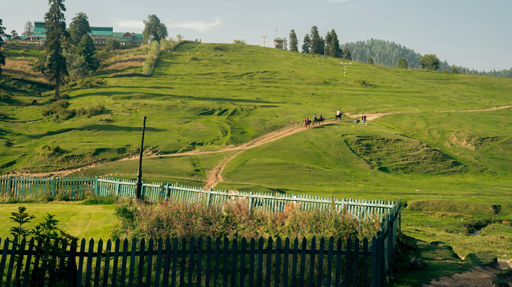
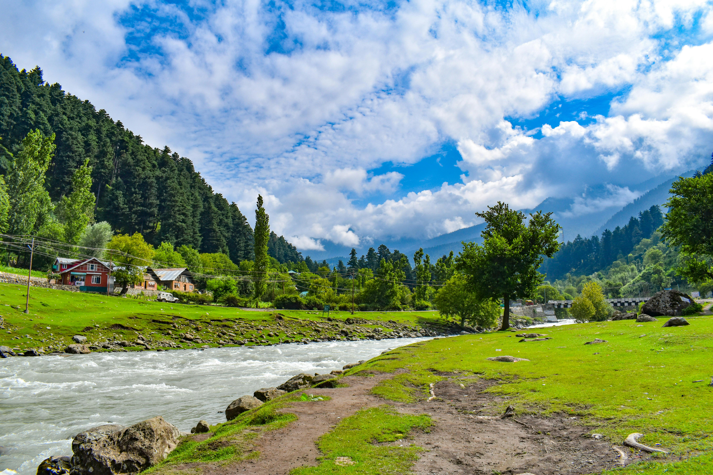
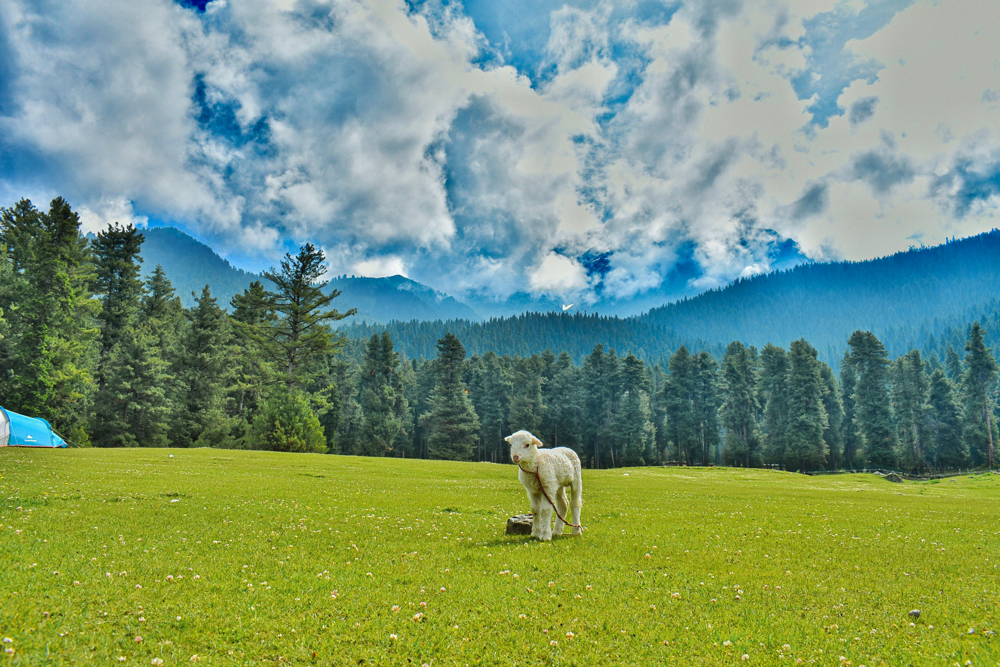
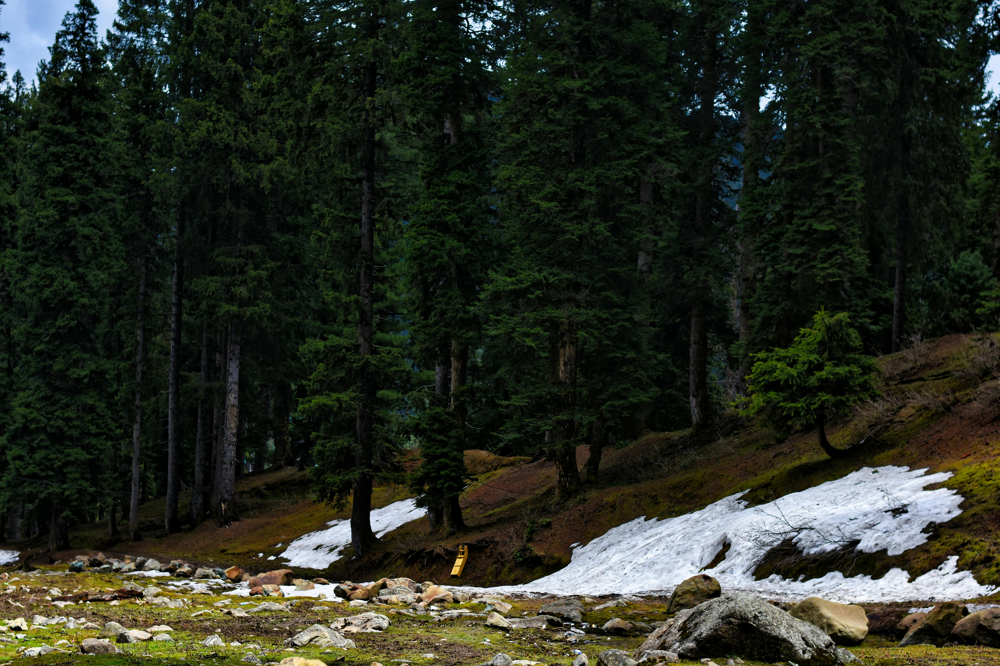

Photography
A Glimpse of Doodhpathri
Wildflower meadows, milky streams, and pine-clad slopes that make Doodhpathri the most photogenic secret in all of Kashmir.





Kashmir's Valley of Milk — a pristine alpine meadow at 2,730 meters, where frothy white streams weave through wildflower carpets and pine-clad ridges untouched by the crowds.
Nestled at 2,730 meters in Jammu & Kashmir's Budgam district, Doodhpathri — meaning "Valley of Milk" in Kashmiri — is one of the most pristine and unspoiled alpine meadows in the entire Kashmir Valley. The name comes from the fast-flowing Shaliganga stream, whose waters rush over white limestone rocks, turning the water a frothy, milky white that gives this hidden paradise its poetic name.
Unlike Pahalgam or Gulmarg, Doodhpathri has no permanent human settlement — it is visited only by Gujjar and Bakerwal shepherds during summer months, lending it an untouched, almost mythical quality. Vast expanses of rolling meadows carpeted with wildflowers, saffron-yellow buttercups, and alpine blooms stretch in every direction, framed by dense deodar forests and snow-dusted peaks.
The valley is a paradise for trekkers and nature lovers seeking solitude. The Tosamaidan trek, one of the most scenic multi-day routes in the region, begins near Doodhpathri, while shorter trails loop through the meadows and along the Shaliganga stream — perfect for a peaceful, unhurried day in nature.
Doodhpathri is increasingly being discovered as Kashmir's best-kept secret — a destination where the mountains feel intimate, the air is impossibly clean, and the only sounds are the wind through the pine trees and the rush of milky white water over ancient stone.
Wildflower meadows, milky streams, and pine-clad slopes that make Doodhpathri the most photogenic secret in all of Kashmir.




Wildflower meadows, milky streams, Gujjar shepherd life, and complete solitude — Doodhpathri is Kashmir at its most pure and unhurried.
The valley's iconic waterway flows over white limestone rocks, creating a frothy, milk-like current that gave Doodhpathri its name. The stream's banks are perfect for a peaceful afternoon picnic or quiet contemplation.
Come spring and summer, Doodhpathri transforms into a living tapestry of wildflowers — yellow buttercups, blue forget-me-nots, and alpine blooms stretch as far as the eye can see across the rolling meadow floors.
One of Kashmir's most scenic multi-day trekking routes passes through Doodhpathri on its way to the remote Tosamaidan meadow — a challenging but deeply rewarding alpine adventure for serious trekkers.
Explore the vast meadow expanse on horseback — the traditional and most atmospheric way to traverse Doodhpathri's wide valley floor, with local horsemen offering guided rides across the entire grassland.
In summer, Gujjar and Bakerwal nomadic shepherds bring their flocks to Doodhpathri's meadows. Witnessing this centuries-old pastoral way of life is one of the most authentic cultural experiences in Kashmir.
With no permanent settlements, no commercial clutter, and far fewer visitors than other Kashmir destinations, Doodhpathri offers a rare communion with nature that is becoming increasingly difficult to find in the valley.
Doodhpathri is at its most magical from late spring through autumn, when the meadows are in full bloom and the trails are fully accessible.
The meadows erupt in wildflowers from April onwards. By May and June the valley is a breathtaking carpet of colour. Temperatures range from 8°C–20°C — ideal for trekking and meadow walks.
The meadows turn golden, the air is crisp, and the crowds thin out almost entirely. Autumn offers the most peaceful Doodhpathri experience with dramatic skies and excellent photography light.
Doodhpathri is blanketed in deep snow through winter, transforming into a pristine white landscape. Road access can be limited and the valley is largely unpopulated — for the adventurous only.
Doodhpathri pairs beautifully with these Kashmir destinations on any multi-day Kashmir itinerary.
Let us plan your perfect Doodhpathri escape — wildflower meadows, the milky Shaliganga stream, and Kashmir's most peaceful alpine solitude.